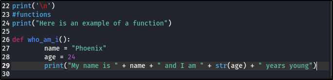

Functions.
A funcrion is a process for executing a task. In simpler terms, they are a bunch of lines of code wrapped up into a package, that we can recall at any point.
It's like shrinking down a bunch of lines of code and making them reusable. It can accept an input and return an output.
Functions are essentail building blocks in Python and can be thought of as, organized block of code that you define and can be caled on later.
Here we would learn about indentation. Python is very particular about indentation, if you don't have indentation in the right places, then your program would not function. So, it is very important to know when to use indentationand to indent properly. Use the key 'tab' on your keyboard to indent.
So, for our function, we're going to use our previious example of our name & age. First we define the function, before we call it.
Here is a defined function but if we don't call it before run it, it won't print out anything:

To call a function, all you need to do is type in the name of the defined function, followed by a parenthesis(). As shown below:

So our function is kinda a mini program, where we defined our variables, and an action to take (which is to print out the string). When we call the function, it takes the variables and executes it.
It is important to note. that whatever is stored in the variable is only stored there inside the function. If we were to print age, outside the function, we would get the initail age of 25, not the stored age of 24 in thefunction.
As shown below:

Adding Parameters
Now, we're going to talk about adding parameters. If you noticed, in our previous example, when we defined our function, the parenthesis after it was left black but now we are going to place something within them.

In the above image, we defined a function called add_one_hundred and added the parameters num (number) in the parenthesis. While calling the function, we provided a number to represent the num in the print (100), which is: print(100 + 100), and obviously resulted in 200.
Let's build on this a little more. What if we want to use multiple parameters, Let's do something basic, like defining an ad function, even though it's built in to python, we;ll make our own.

Hopefully, you are getting ahang of this. We're just building this mini programs, we can have no parameters, as we saw at the very first example. We can have single or multiple parameters, depending on what we need.
Let's build a couple mor, to kinda give a deeper understanding. Still on multiple parameters, we'll try multiplication.

OR
Here's something new:

We still get the same answer. Without adding print to the calling of the function, the result will not be printed out, 'cause all the return feature does, as the name implies, is retun, not printing out to the string.
It would retun the answer back to us and we can store it, to be called later.
How about a function defined as square_root, how would you call that function? How would we do the square root of a number?
That's for you to figure out but i'll give you a hint: it has only one parameter.
Finally, function basic has come to end. This was definitely a long type for me, but before we get to that finnaly stop, i'm sure you noticed (at least, I hope you did), how I never print a new line between my functions, and I have them all jumbled together. We should most definitely write a fuction for that, cause, i don't know about you but remembering print('\n'), is not working for me, at all.
A defined function for a new line, which is a great use of a function:

NB: Don't forget to define your function before calling them and your colon(:) after defining your function (I always forget the colon)
Ok now we are done with functions and next up, is Booleans Expressions, which I like (it's just makes me smile when I hear or see boolean expressions). So Yaay!!